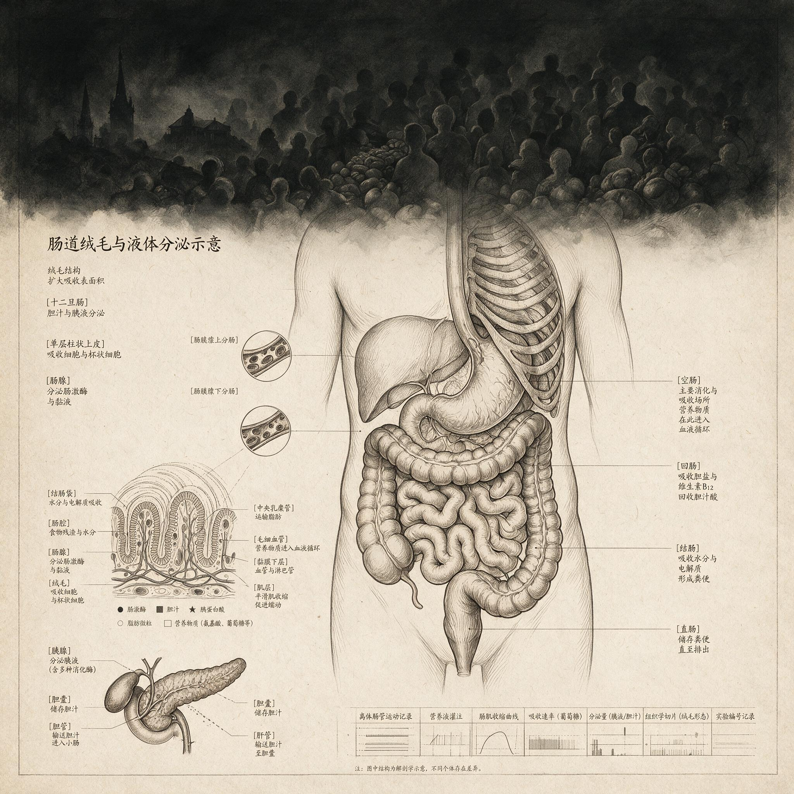

第 12 章
过剩时代的饥饿
人们常常误以为饥饿感必然意味着身体需要能量，但现实是，一个人可以在血糖很高的时候仍然感到饥饿。这听起来像一句生理学上的矛盾，却是许多代谢疾病患者每天经历的现实。饥饿并非总是身体真的缺少燃料，有时它只是仪表读数失真，在能量已经过剩时仍报

肠道绒毛结构与液体分泌示意图
AI 生成插图，非史实影像。
告匮乏。
要理解这个失真的来源，需要先把镜头从腹部拉远，放到全身代谢开关的尺度上。
肠道信号紊乱的后果并不局限在腹部。当局部营养感知在加工食品和慢性压力中变得失真，全身的能量分配也不得不重新调整。
2020年1月11日，上海市公共卫生临床中心、华中科技大学武汉中心医院、武汉市疾病预防控制中心、中国疾病预防控制中心传染病预防控制所与澳大利亚悉尼大学联合在病毒学网站Virological上发布了一份新冠基因组序列信息。序列公布后，多家生物科技公司随即依据基因序列设计PCR检测产品。这一技术链条的直接目标是识别感染者，但随后的临床观察却牵出一个更大的谜：一些病人在急性感染过后并未恢复，反而长期陷于疲劳和精力匮乏。
早期研究显示，每五到十个新冠患者中就有一人出现持续一个月以上的症状；后续分析进一步指出，百分之十五至五十的长期新冠患者符合肌痛性脑脊髓炎与慢性疲劳综合征的诊断标准。
这种综合征病因尚不清楚，遗传和环境因素可能都有作用，神经、免疫系统以及能量代谢问题被认为是核心。二十世纪八十年代末至九十年代初，人类疱疹病毒第四型曾被怀疑为慢性疲劳综合征的病因，后来证明该病并非由单一因素引起。
长期新冠的疲劳现象像一个极端实验，暴露了一个更普遍的生理悖论：血液中养分充足，细胞却像收不到燃料一样继续发出匮乏警报。
一个人总是想吃，未必是管不住嘴。很可能只是他的细胞没有收到能量入库的通知。
负责递送这份通知的是胰岛素。胰岛素是一种由胰腺分泌的肽类激素，可以把它看作身体里的能量库存管理员。进食后，尤其是摄入碳水化合物后，血糖升高，胰腺释放胰岛素进入血液。胰岛素的职责是敲开肌肉、脂肪和肝脏等组织细胞的门，让葡萄糖进入细胞，转化成即时能量或储存起来。
同时，它向下丘脑等脑区发送信号：能量已经到库，库存充足。大脑收到后降低饥饿感，进食停止。这个闭环在人类绝大部分进化史中运行有效。
远古环境没有稳定的超市供能。更新世食物来源不稳定，狩猎采集者常常在饱餐与饥荒之间切换。能在难得饱餐后迅速把多余能量储存为脂肪、并在两餐之间有效调用储备的个体，更有机会生存和繁殖。胰岛素正是这套保守库存策略的执行者。它不只处理一顿饭的葡萄糖，还在替全身做库存决策：先满足即时消耗，再填充肝脏和肌肉的糖原仓库，最后把剩余部分转化为脂肪长期保存。大脑收到胰岛素信号，等于库房账本上盖了“已入库”的章，饥饿感随之下降。
问题不在胰岛素本身，而在于现代饮食让它几乎无法休息。高糖和高精制碳水化合物频繁进入血液，每一餐、每一杯含糖饮料都刺激胰腺释放胰岛素。一天多餐，加上零食饮料，胰岛素长期处于高位。细胞持续暴露在高浓度胰岛素的反复喊话中，做出一个合理但危险的反应：把接收器调钝一些。
细胞受体逐渐钝化，对胰岛素的敏感度下降，这就是胰岛素抵抗。仓库管理员敲门声仍然很大，细胞开的门却越来越少。葡萄糖进不去，堆积在血液里，血糖浓度升高。胰腺见状更加努力地释放更多胰岛素，而更高的胰岛素水平进一步钝化受体。
循环形成后，血液里糖多，细胞里却缺能。于是出现一个表面悖论：血液中的葡萄糖很多，细胞利用不良，大脑却继续收到能量不足的信号。
为什么大脑会误判？因为它对能量状态的判断并不只看血糖绝对值，还综合来自胰岛素、肠道激素、脂肪组织等多条线路的信息。当胰岛素信号变迟钝，饱感中枢渐渐听不到足够的“到库”确认，饥饿感便挥之不去。人吃下很多，血糖很高，仍觉得饿。这不是性格软弱，也不是单纯贪食，而是古老的库房调度系统在错误环境下做出的错误判断。
这套系统曾长期适应稀缺。农业革命带来相对稳定的谷物供给，但季节性匮乏仍频繁出现。收获季大量进食、囤积脂肪，可以帮助农民熬过青黄不接的月份。在那个环境中，高胰岛素反应和脂肪储存仍是生存优势。
真正剧烈的转折发生在工业革命之后，尤其是精制糖大规模进入日常饮食。十九世纪以来，制糖工业把蔗糖从奢侈品变成大众消费品，糖从稀缺热量来源变成无处不在的添加剂。二十世纪以后，高果糖玉米糖浆和现代食品加工进一步把高能量密度食物推到每个人触手可及的位置。
身体面对的问题已经从下一顿在哪里，变成了下一口要不要停。在高能量密度食物的冲击下，饥饿指令被劫持了。它原本的任务是驱动人去寻找高热量食物并储存脂肪，如今却让人在能量过剩中继续进食。
更麻烦的是，许多高能量密度食物绕过正常的饱腹感反馈。柔软面包、甜饮料、薯片在口腔里停留时间短，咀嚼次数少，却能迅速释放大量糖分。肠道和大脑还没来得及处理吃饱的信号，数百千卡已经进入身体。
这不是阴谋，而是古老系统追不上食物加工的速度。速度差本身就是错配的一部分。
从全身能量分配的角度看，胰岛素抵抗不只是体重问题。它改变的是能量分配优先级。肌肉利用葡萄糖的效率下降，肝脏仍持续输出糖分，脂肪组织继续囤积。
大脑感知到一种持续的能源紧张，哪怕身体已经储存了过多能量。于是能量被优先分配给脂肪储存，牺牲其他组织的高效运转。慢性疲劳、运动耐量下降、伤口愈合变慢、思维迟缓，都可以从这个角度理解。它们是同一个调度系统在错误信号下做出的全局调整。能量本应流向肌肉和大脑，却被错误地锁进脂肪仓库。身体越囤越多，却越觉得不够用。
这种矛盾与长期新冠的观察形成交汇。病毒感染可能触发身体能量分配系统的持久紊乱，使细胞无法有效利用能量。血液中养分充足，机体却持续感到燃料匮乏。
这说明饥饿感和疲劳感并不完全取决于外部能量供应，而取决于细胞内部的实际利用效率。食物过剩的世界里，可摄入热量确实充足，但胰岛素抵抗发展到一定程度后，细胞内部的能量转化仍然受阻。外部丰裕和内部匮乏可以同时存在。因此，2型糖尿病和代谢综合征并非简单的意志力失败，而是古老节能指令被过剩环境劫持后的病态重塑。
在稀缺时代，一定程度的胰岛素抵抗可能有保护作用：饥荒期减少肌肉对葡萄糖的摄取，把有限葡萄糖留给大脑和红细胞。有学者提出过节俭基因假说，而此前一些观察已经把肥胖和胰岛素抵抗视为代谢可塑性的一部分。
可塑性意味着身体根据环境信号调整运行模式。当环境一再传递食物不稳定、时多时少的信号，身体就倾向于采取保守库存策略：多存脂肪，少动用肌肉消耗。现代加工食品每天多次发送类似高糖信号，身体便把每一天都当成需要为饥荒做准备的日子。
悲剧在于，这种应对在远古是聪明的，在现代却变成慢性损害。持续高胰岛素水平可能损伤血管内皮，诱发炎症，改变血脂模式。腹型肥胖本身又是炎症来源，脂肪组织释放炎症因子，进一步干扰胰岛素信号。
饥饿密令失灵后，不只是体重数字上升，还可能重塑整个身体的炎症状态和能量分配优先级。长期低度炎症中，关节更容易疼痛，情绪更容易低落，精力更容易枯竭。
人们试图用意志力对抗饥饿，往往失败，因为对手不是一时的口腹之欲，而是一条在进化中被反复强化的生存指令。那条指令用最古老的方式催促继续吃，仿佛人仍处在可能挨饿的世界里。
面对这样的驱动，极端节食常常适得其反。严格限制卡路里确实制造能量缺口，但身体会把限制解读为饥荒信号，进一步降低基础代谢，增强饥饿驱动。节食者越减越难，体重反弹常常超过起点。
另一种反应是求助药物压制饥饿。一些药物可以干扰食欲信号，但如果不改变食物环境和能量分配模式，单纯抑制饥饿可能带来其他问题。饥饿本身是信使，用药把信使杀死，并不能让货物运达细胞。
当细胞层面仍然缺能，身体会从其他路径寻找补偿。这些补偿路径的细节尚未完全清楚。肠道菌群在代谢中的具体作用、个体之间的明显差异、中枢神经系统如何整合来自肠道和脂肪的多种信号，仍有许多未知。科学的诚实就在于承认这些未知不是需要掩盖的漏洞，而是切入更深问题的窗口。
但可以确定的是，饥饿密令的失灵已经让大量人群陷入奇特处境：食物从未如此廉价和充足，身体却从未如此频繁地报告匮乏。
人造甜味剂还增加了信号污染。味觉尝到甜味，以为糖分即将到达，胰腺甚至可能提前释放胰岛素，但没有葡萄糖真正进入血液。虚假到库预告反复出现后，味觉和代谢之间的联动变得迟滞。身体在嘈杂的甜味信号里越来越难以判断真实能量状态。
市场失灵不只发生在组织层面，也发生在细胞层面。这个市场的失灵并不意味着应该回到稀缺。稀缺时代的饥饿虽然真实，却也危险。问题在于，现代环境给身体提供了足够能量，却给出了错误的时间与结构。
高糖食物在短时间内制造血糖峰值，又在胰岛素作用下快速下降，血糖过山车会再次触发饥饿。一个三餐不定、靠能量棒和含糖饮料支撑的人，可能在下午四点感到强烈饥饿，并不是因为身体真的需要更多能量，而是因为血糖快速跌落，大脑把落差解释为需要立刻进食。进食后血糖又飙升，胰岛素又大量释放，下一次跌落随之而来。
这个循环一天内可重复多次，每次都在强化胰岛素抵抗。古代社会里，这种血糖剧烈波动很少见。食物需要采集、猎捕或加工，纤维含量高，能量释放缓慢。即使农业时代，整粒谷物和粗加工食品的升糖速度也远低于现代精制面粉和糖。身体的激素系统有充足时间做出平缓反应。
工业革命改变了这个时间尺度。十九世纪初期，英国人均糖消费开始显著上升，糖从贵族餐桌进入工人阶层的茶饮和果酱。二十世纪食品工业把糖、精制面粉和油脂组合成高能量密度、低饱腹感的产品，价格便宜，保质期长，随处可得。身体被置于一个从未体验过的信号环境里：能量密集，但对饱腹感中枢的刺激很弱。
胰岛素抵抗正是这种环境下最典型的代谢重塑。它让细胞在糖分包围中仍感到饥饿，让脂肪在能量过剩时仍继续囤积，让大脑在身体已经负担过重时仍下达进食命令。
在此过程中，意志力能起的作用十分有限。它可能让人短时间忍受饥饿，但激素信号不断累积，最终在某个疲惫的夜晚突破控制。随后人们自责，把失败归咎于缺乏自律。
其实真正需要审视的不是个人品格，而是身体仍在执行的那份古老密令。这份密令来自一个完全不同的世界，却仍在代谢底层运行。它不懂超市、精制糖和久坐工作日，只懂稀缺和储存。
密令在体内的执行链条大致如此：血糖升高，胰腺释放胰岛素，胰岛素打开细胞门，葡萄糖进入，大脑收到到库信号，饥饿暂停。现代高糖饮食让这条链的前半段频繁激活，后半段逐渐失灵。细胞门开得越来越少，大脑听到的信号越来越弱，饥饿便不被暂停。饥饿变成一种持续的背景音，不论刚吃完多久，不论胃里是否还满。
人们开始怀疑自己的饥饿是否真实。其实饥饿信号本身不是谎言，它只是在报告一套已经失真的仪表读数。真正的麻烦在于，仪表周围的整个代谢系统已被重塑，读数和现实之间的换算表不再适用。
这种状态长期存在，影响远不止体重。胰岛素抵抗改变全身能量分配优先级，炎症水平上升，组织修复能力下降。慢性疲劳不是简单的没睡够，而是在细胞能量本已紧张的情况下，任何额外消耗都被视为奢侈。
大脑可能减少对非生命必需活动的能量投资，于是注意力下降、情绪低落、动力不足。这些变化与长期新冠后遗症中的疲劳和脑雾有部分重叠，也广泛存在于没有感染过新冠的代谢综合征人群中。共同线索是能量分配错乱：血液中有燃料，细胞却缺乏可用能量，大脑不断收到匮乏警报。
饥饿密令开始影响一个人如何工作、如何睡觉、如何与人相处。食物过剩时代的持续饥饿，因此从私人烦恼变成公共健康现象。
儿童时期过早接触含糖饮料和精加工零食，会在尚未成熟的代谢系统里种下胰岛素抵抗的种子。成年人长期高压、睡眠不足，会通过应激激素和饥饿激素的交叉作用加剧对高热量食物的渴望。
焦虑和饥饿在神经环路里本有重叠。食物稀缺时代，焦虑帮助人优先寻找食物；食物过剩时代，焦虑则容易让人撕开第二包薯片。身体把压力解读为可能即将耗竭，于是增加能量储备。
古老的生存逻辑与现代心理压力相遇，结果就是越焦虑越想吃，越吃越疲惫，越疲惫越焦虑。这个循环难以打破，因为驱动力不在意识层面。
人们可以用知识和意志调整部分行为，却很难改变细胞受体对胰岛素的反应。规律运动、增加膳食纤维、改善睡眠、减少含糖饮料，确实能改善胰岛素敏感性，但这些改变需要时间，而身体的饥饿密令并不在乎时间。它只在乎当下能量库存是否看起来安全。在它看来，任何减少摄入的行为都可能是有风险的。
因此，温和的代谢调整往往比极端节食更有效，但效果不会立竿见影。这正是慢性病令人沮丧之处：病因隐藏在进化深处，改善也需要与古老的驱动力缓慢谈判。谈判的对象不是敌人。饥饿曾经保护过人类祖先。它是稀缺环境中最可靠的生存指令之一，驱动人们寻找高热量食物，帮助个体在饥荒中活下来。胰岛素同样是功臣，让难得的营养得以储存。
问题在于，这些密令没有预见，也不需要预见一个食物供给持续过剩、身体活动却大幅减少的世界。进化没有失误，它只是为另一个世界准备了这套系统。二十一世纪的人类带着那套系统走进糖分无处不在的便利店。身体只能执行旧程序，环境却已完全不同。
于是古老的库存策略变成现代的病态重塑。这不是衰竭，不是退化，而是错配。错配的后果不均衡地落在不同人群身上。遗传背景、早期营养、社会经济条件都会影响一个人对高糖环境的耐受程度。
有些人胰岛素抵抗发展较快，有些人较慢。科学还不能完全解释这些个体差异，但知道简单地把代谢病归咎于个人选择，既不符合证据，也无助于寻找解决办法。更诚实的角度是把代谢病看成身体在错误环境中做出的适应反应。适应本身可能合理，长期执行却会损伤身体。就像干旱地区的植物学会缩小气孔保存水分，移栽到潮湿温室后仍紧缩气孔，最终可能因蒸腾不足而发育不良。身体在过剩时代仍执行稀缺策略，也会因过度囤积和限制细胞能量利用而生病。
饥饿感是这个过程最直接的表征。它把抽象的内分泌变化翻译成无法忽视的主观体验。人在这种体验中感到痛苦，不只因为胃空或血糖低，还因为身体正用古老的词汇大声呼叫。它以为这声呼叫能让人去寻找食物、补充能量。
可在超市货架和外卖软件面前，呼叫只会让人吃下更多让问题恶化的东西。食物入口后血糖升高，胰岛素大量释放，细胞却越来越听不见。下一次呼叫来得更快、更强。
身体像一台老式闹钟，卡在响铃轨道上，无法判断自己早已不需要新的能量入库。这闹钟为何卡住，可以从新冠长期后遗症中得到一个侧影。一部分长期新冠患者在感染后出现与慢性疲劳综合征相似的持续疲劳和精力匮乏，血液检查未必显示严重营养缺乏，但细胞层面的能量代谢可能已经紊乱。有人轻微活动后就严重疲劳，仿佛身体拒绝动用储备；
有人伴随认知障碍，注意力难以集中，临床上常被描述为脑雾。脑雾让人感觉大脑缺少燃料，尽管血液中的氧和糖分指标可能都在正常范围。关键依然是利用效率，而不是供应总量。供应充足但利用不良，身体就仍然觉得匮乏。
饥饿感如此，疲劳感也如此。两者都可能是细胞饥饿的不同侧面。细胞饥饿并非严格意义上的所有细胞都在挨饿。它更像局部能量分配失衡：某些组织利用能量受阻，于是向中枢报告缺乏；
中枢收到累积匮乏信号，提升饥饿或降低活动。其他组织可能正在把多余能量转化为脂肪储存。这种不平衡使得少吃会好的直觉过于简单。少吃确实能减少血液中的糖来源，但如果细胞仍无法有效利用进入的糖，饥饿感和疲劳感就不会马上消失。身体还可能通过降低基础代谢来应对减少的摄入。
于是减重平台期出现，饥饿感重新抬头。所有这些都说明，饥饿密令失调是系统性问题，不是胃的问题，也不只是血糖的问题。系统性问题需要系统理解。胰岛素抵抗的起点也许在胰腺和细胞之间，后续影响却扩散到肝脏、脂肪、大脑、血管和免疫系统。肝脏在胰岛素抵抗时仍通过糖异生输出葡萄糖，使血糖进一步升高。
脂肪组织炎症释放的因子会干扰胰岛素信号。大脑下丘脑对瘦素和胰岛素的敏感性也下降。瘦素是脂肪组织分泌的另一种关键激素，告诉大脑能量储备充足。可当大脑对瘦素的信号变得迟钝，饥饿感就更难平息。肥胖者往往瘦素水平很高，却依然感到饥饿，原因之一就是中枢的瘦素抵抗。
身体在能量储备过剩时仍呼喊不足，这不只是胰岛素的独角戏，而是多条反馈回路共同失灵。把这些回路放回进化史中，会得到更清晰的图像。更新世祖先即使遇到大量成熟果实或成功狩猎，也不可能长期维持高糖高脂饮食。季节变化、迁徙和群体竞争会打断能量盈余。身体需要依靠强健的饥饿和饱腹信号维持体重。
农业革命后，主食以谷物为主，但粗加工和劳作强度使得血糖负荷远低于现代工业饮食。工业革命才是真正把高热量饮食变成常态的转折点。机械化运输与加工、制冷技术、食品添加剂和速食文化让能量获取变得极快，同时体力劳动减少，能量消耗下降。供给曲线和需求曲线同时转向，身体却仍使用千年前的软件。
代谢软件更新太慢，环境变化太快，错配由此产生。在这样一条证据链上，每一步都通向同一个判断：持续饥饿不是个人贪欲的证明，而是古老能量指令在过剩时代被劫持的表现。这个判断对病人有某种解放意义。它把负担从我不够自律，转移到细胞收不到能量充足信号这一生理事实上。但解放不意味着放弃行动。
理解机制之后，可能的干预方向反而更清晰：改善胰岛素敏感性、降低高糖食物频率、调整进食顺序、增加肌肉活动，都是朝着修复信号系统而非惩罚自己的方向努力。
不过本章不负责给出食谱或运动计划。科学可以描述机制，个体应对方案仍需更多研究。我们不能假装已经知道所有答案。个体对相同饮食的反应差异巨大，肠道菌群的具体角色、中枢能量感知的精确算法，仍有许多未知。这些未知提醒我们，不要用简单的少吃多动遮盖复杂。复杂不代表无解。它只是要求先拆除一个常见误解：饥饿一定是身体真的需要能量。在过剩时代，饥饿更常意味着能量分配出了毛病。
胃可以是空的，但血糖和脂肪储备未必不足；血液中的糖可以很高，细胞却仍在呼救。理解这个反差，是理解代谢错配的关键一步。它把焦点从单一器官移开，放到全身的信号网络上。胰岛素是这个网络中的一个节点，也许是最响亮的节点之一。它负责在饭后告诉细胞和大脑有货到了。当节点周围噪声太大、接收器疲劳，整条线路就会发出错误报告。
报告内容仍沿用古老语法：能量不足，快去找吃的。于是人在丰裕中挨饿。这种饥饿并非静态。它会随着每顿饭的选择、每天的睡眠、每周的压力水平而波动。熬夜之后，饥饿素水平可能上升，饱感激素水平下降，人更容易吃多。压力大时，皮质醇升高，血糖管理变差，进一步加剧胰岛素抵抗倾向。运动和睡眠可以改善敏感度，但并非每个人都能获得充足睡眠和运动条件。
夜班工作者、长期照顾病人的家属、高压岗位上的员工，往往在深夜忍不住想吃甜食。这不是意志放弃抵抗，而是身体在代谢压力下加倍呼救。社会环境的不平等会加重错配：新鲜食物价高，精加工食品便宜，健康食品地理分布不均。这些现实把古老信号问题扩大为结构性问题。结构性问题不能靠一篇科普解决。
但把结构说清楚，是写作者的责任：身体没有变坏，只是接收了错误的时代指令。饥饿密令曾经帮助人类存活，如今却让数百万人在食物过剩中继续囤积、继续饥饿、继续发炎。它带来肥胖、糖尿病、脂肪肝、心血管风险，也带来精力耗竭和认知下降。
它把一个内在生存驱动变成持续慢性消耗。这不是一个关于饮食好坏的道德故事，而是关于进化设计与现代社会脱节的故事。身体仍在按照更新世的剧本执行命令，而我们早已不在那个舞台上。新舞台的布景是无限供应的糖和极少的体力活动。剧本没变，舞台变了，冲突便全部涌来。饥饿密令每响一次，身体就更深地滑入炎症与能量分配的失衡，影响的远不只是体重数字。